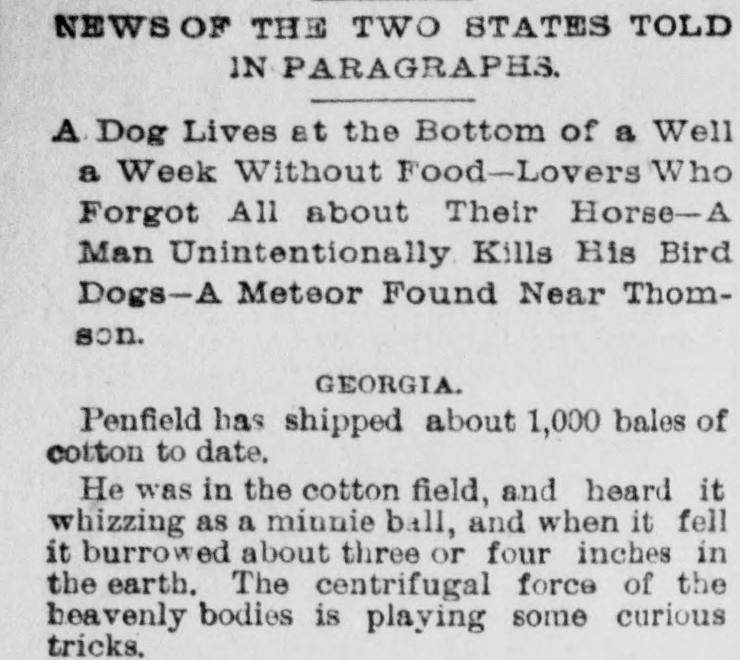

A side project · American newspapers, 1770–1964
I read 200 years of old newspapers looking for rocks that fell from the sky.
Thirteen of those stories I followed all the way to the end, through later papers, science journals and museum records. Most were hoaxes or ordinary rocks. One was a real meteorite the catalogue had wrong, and a vote to fix the record is underway.
The one that got fixed
A Georgia meteorite, catalogued wrong since 1888.
The meteorite catalogue lists Thomson, Georgia as a find, a stone picked up later with nobody seeing it come down. But in November 1888 the finder, B. F. Wilson, wrote that it fell within thirty yards of him while he was picking cotton, and that he dug it out with a spade.
Three weeks later the Savannah Morning News ran a paragraph saying a man in a cotton field "heard it whizzing as a minnie ball", and a paper 23 miles away reported a thundering noise at about 1 p.m. the same day. I sent all of it to the Meteoritical Bulletin's database editor, who dug up Wilson's original letters, and the committee is now voting on listing Thomson as an observed fall.
It's a correction to a meteorite that was already known, not a new one. Still pretty cool for a few old newspaper paragraphs.
Read the whole Thomson case →
All thirteen
Every stone I followed, and how it turned out.
How I did it
A computer read the papers. Then I chased the good ones.
The Library of Congress has scanned millions of old newspaper pages, and a research group at Harvard turned them into text. I wrote a pipeline that searched all of it from 1770 to 1964 for anything about meteors, used a local AI model to sort out the actual sky reports, and then I read the interesting ones myself.
Every claimed fall then got followed forward: later papers, science journals, museum accession records, and a lot of emails to small-town historical societies.
The method, its limits, and the data →SKY IN PRINT · RUN 1770–1964
- articles read
- 348.8 million
- mention a meteor
- 245,247
- say a stone fell
- 6,250
- fireballs, 2+ towns
- 821
- followed to the end
- 13
NO NEW METEORITE CONFIRMED